ACTIVIDADES PARA APRENDER A PROGRAMAR CON SCRATCH
¿En qué consiste?
- Actividades o retos gratuitos con Scratch para aprender a programar.
- Retos pensados para realizar en el aula o en casa.
- No es necesaria experiencia previa.
¿Cómo participar?
- Crea tu cuenta en Scratch siguiendo el video tutorial:
Actividad 1: ¡Crea un Juego de Laberinto!
Paso 1: Entra a Scratch y crea un nuevo proyecto.
Paso 2: Dibuja un laberinto en el escenario.
Paso 3: Usa bloques de movimiento para mover tu personaje.
Paso 4: Agrega un "fin del juego" cuando el personaje llegue a la meta.
Actividad 2: Juego de Atrapa Frutas 🍎
Paso 1: Usa un fondo y agrega un sprite como canasta.
Paso 2: Haz que caigan frutas aleatoriamente.
Paso 3: Usa bloques para mover la canasta con las flechas.
Paso 4: Suma puntos cuando atrapes frutas.
Actividad 3: Romper Ladrillos
En esta práctica vamos a programar un juego que consiste en romper ladrillos con una pelota que rebota en una barra. Cada ladrillo roto nos dará un punto.
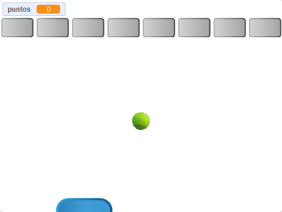Pasos:
- Inicia el editor de Scratch y selecciona el idioma Español.
- Borra el objeto gato y añade una barra de control (Button2).
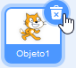 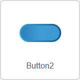 - Programa la barra para que siga la posición del ratón.
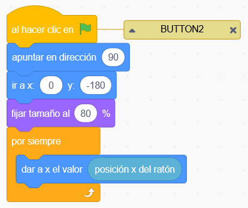 - Añade un ladrillo (Button3) y una pelota (Tennis ball). 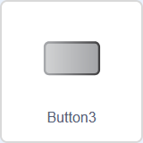 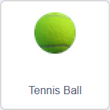
- Programa la pelota para que rebote y desaparezca si cae.


- Crea una variable puntos para contar los ladrillos rotos.
- Crea una variable posición para organizar los ladrillos.
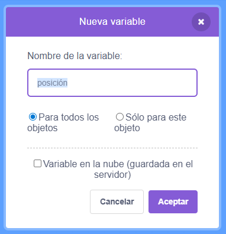 -
Organiza los ladrillos en filas.
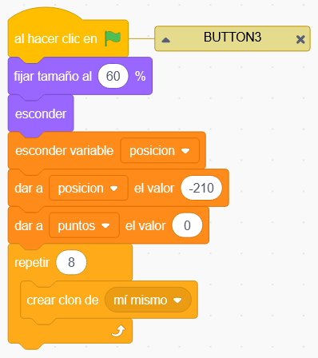 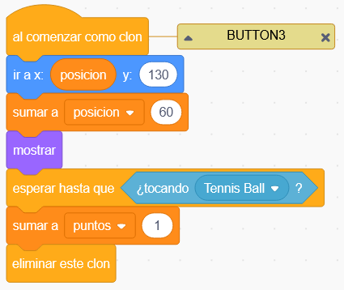
- Pulsamos la bandera verde bandera-verde para probar el funcionamiento del programa. Al iniciarse el programa, aparecerán todos los ladrillos en la parte superior de la pantalla. Ahora podemos jugar con la pelota al pulsar la barra espaciadora.
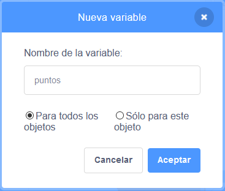
Retos:
- Finalizar el juego tras perder 3 pelotas.
- Personalizar el aspecto de los personajes.
- Crear dos filas de ladrillos con posiciones distintas.
Trabajo en Clase Avance: Juego de Fútbol
En esta actividad vamos a crear un juego de fútbol con menú interactivo y fondos personalizados.
Pasos:
-
Cambiar el fondo y agregar dos fondos diferentes
Ve a la sección de fondos en Scratch y selecciona dos fondos diferentes para tu juego de fútbol. Uno será para el menú principal y otro para el juego.
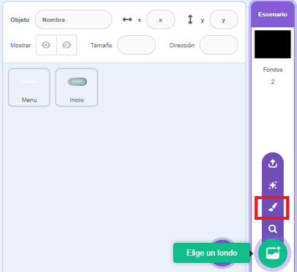 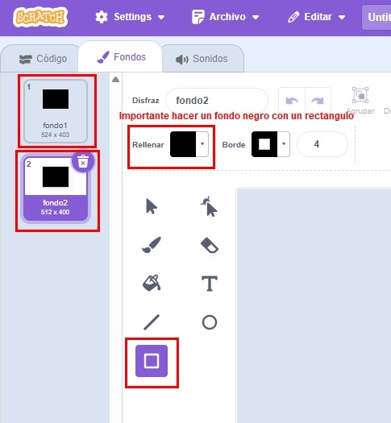
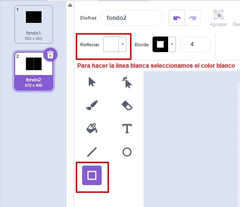 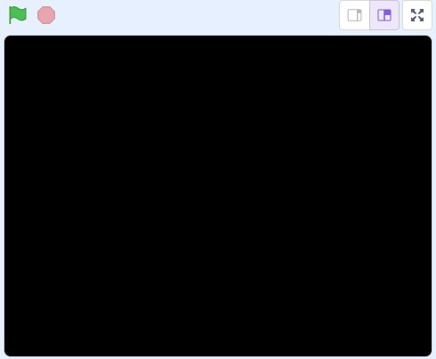
Agrega el siguiente código para cambiar entre fondos:
Seleccionamos codigo:
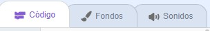
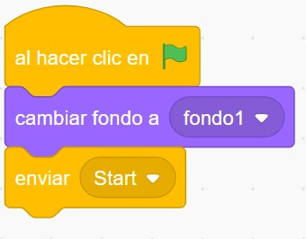
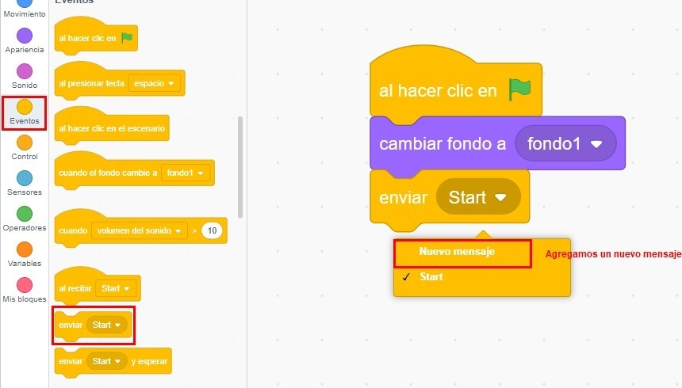 -
Crear un menú con texto "JUEGO DE FÚTBOL"
Crea un nuevo objeto de texto que diga "JUEGO DE FÚTBOL". Este será el título de nuestro menú principal. Posiciónalo en la parte superior del escenario.
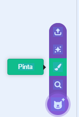 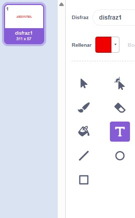
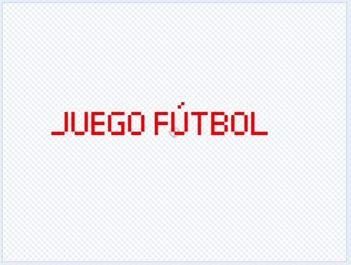 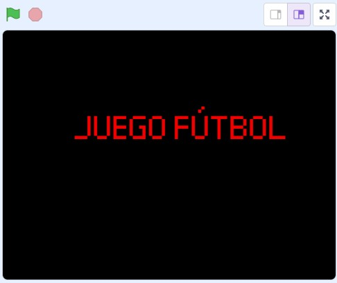El objeto solo necesita aparecer cuando estemos en el menú principal. -
Crear un botón de inicio (Button2)
Añade un objeto Button2 que servirá como botón de inicio. Personaliza sus colores para que se vea atractivo y agrega el texto "INICIO" o "START".
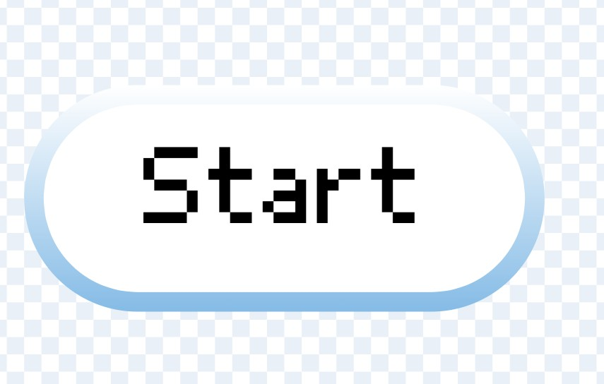
Cambia los colores del botón para que combine con el tema del fútbol. -
Programar efecto de el botón
Programa el botón para que cambie de tamaño cuando el mouse pase por encima. Esto hará que el menú se vea más profesional y responsivo.
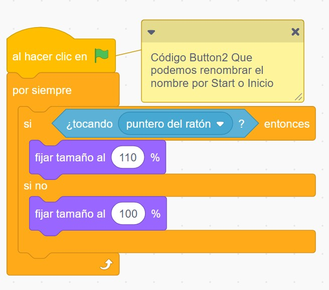
El código debe incluir:- Detectar cuando el mouse toca el botón
- Aumentar el tamaño del botón (por ejemplo, a 110%)
- Regresar al tamaño normal cuando el mouse se aleja
- Regresar al tamaño normal cuando el mouse se aleja